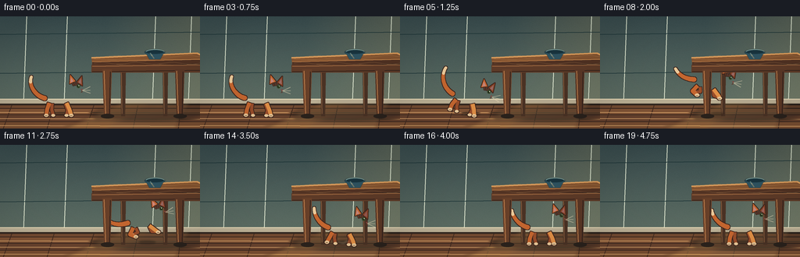
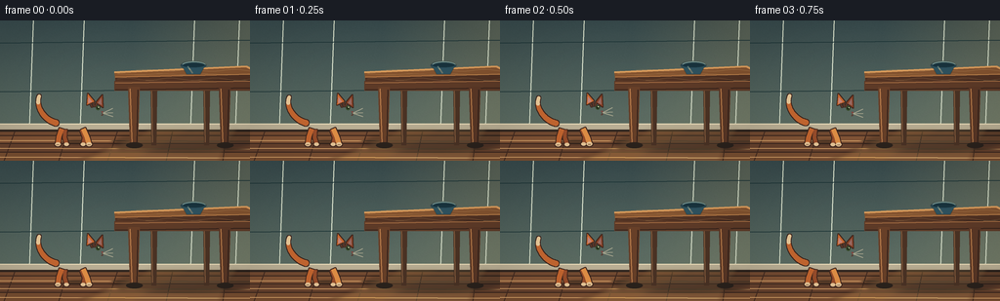
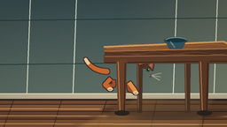
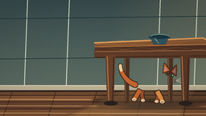
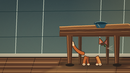
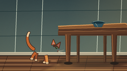
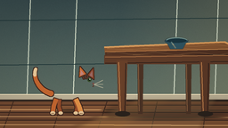
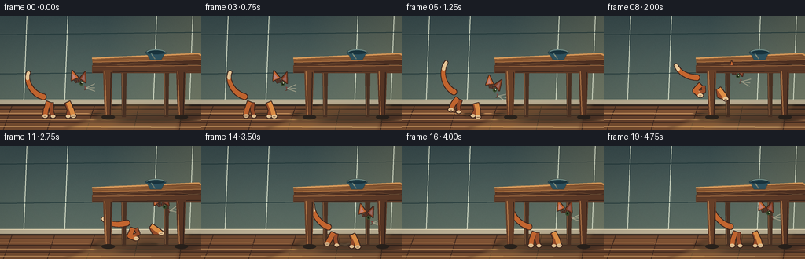
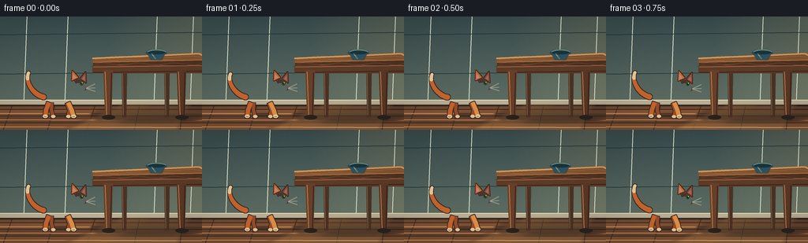

CODING AGENTS AS PIXEL WORLD MODELS
traex/DeepSeek-V4.1-Flash · dynamic_spatial_relationship_0008
点击播放 · 原生 RGB 像素
逐轮保存的候选
回放视频、检查图与代码变化。
每份候选均可单独播放。实际图片检查记录在下方工具轨迹中。
候选 01播放与检查图
点击播放 · 原生 RGB 像素


展开代码变化
--- 上一保存版本
+++ 本次保存版本
@@ -0,0 +1,471 @@
+from pathlib import Path
+import math
+
+import numpy as np
+from PIL import Image, ImageDraw, ImageFilter
+
+import artifact_io
+
+
+WIDTH = 256
+HEIGHT = 144
+FRAMES = 20
+FPS = 4.0
+SCALE = 4
+CASE_DIR = Path(__file__).resolve().parent
+
+
+def rgba(size, color=(0, 0, 0, 0)):
+ return Image.new("RGBA", size, color)
+
+
+def scaled_box(box):
+ return tuple(int(round(v * SCALE)) for v in box)
+
+
+def scaled_points(points):
+ return [(int(round(x * SCALE)), int(round(y * SCALE))) for x, y in points]
+
+
+def paste_soft(base, layer, blur=0.0):
+ if blur:
+ layer = layer.filter(ImageFilter.GaussianBlur(blur * SCALE))
+ base.alpha_composite(layer)
+
+
+def cubic_bezier(p0, p1, p2, p3, count=28):
+ out = []
+ for i in range(count):
+ t = i / (count - 1)
+ u = 1.0 - t
+ x = u**3 * p0[0] + 3 * u**2 * t * p1[0] + 3 * u * t**2 * p2[0] + t**3 * p3[0]
+ y = u**3 * p0[1] + 3 * u**2 * t * p1[1] + 3 * u * t**2 * p2[1] + t**3 * p3[1]
+ out.append((x, y))
+ return out
+
+
+def draw_background():
+ width, height = WIDTH * SCALE, HEIGHT * SCALE
+ yy = np.linspace(0.0, 1.0, height, dtype=np.float32)[:, None]
+
+ wall_top = np.array([57, 76, 78], dtype=np.float32)
+ wall_bottom = np.array([106, 121, 107], dtype=np.float32)
+ wall = wall_top[None, :] * (1.0 - yy) + wall_bottom[None, :] * yy
+ wall = np.repeat(wall[:, None, :], width, axis=1)
+
+ # A restrained warm wash suggests late-afternoon light entering from the right.
+ xx = np.linspace(0.0, 1.0, width, dtype=np.float32)[None, :]
+ sun = np.clip((xx - 0.53) * 1.9, 0.0, 1.0) * np.clip(1.0 - yy * 0.35, 0.0, 1.0)
+ sun_color = np.array([35, 24, 9], dtype=np.float32)
+ wall += sun[:, :, None] * sun_color[None, None, :]
+
+ rng = np.random.default_rng(117)
+ noise = rng.normal(0.0, 2.2, (height, width, 1)).astype(np.float32)
+ wall += noise
+ canvas = Image.fromarray(np.clip(wall, 0, 255).astype(np.uint8), "RGB").convert("RGBA")
+ draw = ImageDraw.Draw(canvas)
+
+ # Plaster variation and a soft vertical seam keep the wall from reading as flat.
+ for x, alpha in [(34, 18), (86, 12), (199, 10), (245, 16)]:
+ draw.line(scaled_points([(x, 0), (x - 4, 108)]), fill=(223, 231, 208, alpha), width=SCALE)
+ for y, alpha in [(23, 12), (73, 9)]:
+ draw.line(scaled_points([(0, y), (256, y - 3)]), fill=(31, 54, 56, alpha), width=SCALE)
+
+ # Wooden floor, drawn in broad perspective bands.
+ floor_top = 111
+ floor_palette = [(117, 76, 50), (132, 86, 55), (106, 68, 47), (124, 80, 51)]
+ band_edges = [111, 118, 126, 135, 144]
+ for i in range(len(band_edges) - 1):
+ y0, y1 = band_edges[i], band_edges[i + 1]
+ color = floor_palette[i]
+ draw.rectangle(scaled_box((0, y0, 256, y1)), fill=(*color, 255))
+ draw.line(scaled_points([(0, y0), (256, y0)]), fill=(59, 39, 31, 110), width=SCALE)
+ for x0 in [16, 70, 121, 177, 232]:
+ draw.line(
+ scaled_points([(x0, 111), (x0 - 15 + (x0 % 13), 144)]),
+ fill=(69, 45, 34, 100),
+ width=SCALE,
+ )
+ for y, alpha in [(123, 22), (131, 18), (140, 24)]:
+ draw.line(scaled_points([(0, y), (256, y + 1)]), fill=(226, 172, 112, alpha), width=SCALE)
+
+ # Baseboard and its shadow.
+ draw.rectangle(scaled_box((0, 106, 256, 113)), fill=(190, 178, 151, 255))
+ draw.line(scaled_points([(0, 106), (256, 106)]), fill=(239, 224, 188, 210), width=SCALE)
+ draw.rectangle(scaled_box((0, 112, 256, 114)), fill=(51, 40, 33, 120))
+
+ # Wide floor sunlight with a softer edge.
+ light = rgba(canvas.size)
+ ld = ImageDraw.Draw(light)
+ ld.polygon(scaled_points([(155, 111), (244, 111), (220, 144), (82, 144)]), fill=(247, 190, 105, 38))
+ ld.polygon(scaled_points([(193, 111), (239, 111), (225, 144), (135, 144)]), fill=(255, 218, 142, 22))
+ paste_soft(canvas, light, blur=2.3)
+ return canvas
+
+
+def draw_table_back(canvas):
+ draw = ImageDraw.Draw(canvas)
+
+ # Ground shadow beneath the table.
+ shadow = rgba(canvas.size)
+ sd = ImageDraw.Draw(shadow)
+ sd.ellipse(scaled_box((116, 116, 259, 134)), fill=(31, 28, 25, 110))
+ sd.polygon(scaled_points([(124, 119), (256, 114), (256, 128), (121, 132)]), fill=(29, 26, 24, 84))
+ paste_soft(canvas, shadow, blur=2.2)
+
+ # Rear legs, intentionally lower contrast than the front pair.
+ for x0, x1 in [(153, 161), (207, 215)]:
+ draw.polygon(
+ scaled_points([(x0 + 1, 65), (x1, 65), (x1 - 1, 128), (x0 + 2, 128)]),
+ fill=(75, 51, 37, 255),
+ )
+ draw.line(scaled_points([(x0 + 2, 68), (x0 + 3, 125)]), fill=(130, 91, 61, 110), width=SCALE)
+
+ # Rear apron.
+ draw.rectangle(scaled_box((126, 62, 256, 70)), fill=(86, 56, 39, 255))
+ draw.line(scaled_points([(126, 63), (256, 61)]), fill=(157, 108, 67, 140), width=SCALE)
+
+ # Top slab: warm top plane, dark front edge, and a bright bevel.
+ draw.polygon(
+ scaled_points([(117, 53), (252, 47), (256, 49), (256, 58), (118, 62)]),
+ fill=(133, 84, 48, 255),
+ )
+ draw.polygon(
+ scaled_points([(118, 58), (256, 55), (256, 64), (118, 65)]),
+ fill=(81, 50, 35, 255),
+ )
+ draw.line(scaled_points([(117, 53), (252, 47), (256, 49)]), fill=(220, 157, 92, 230), width=2 * SCALE)
+ draw.line(scaled_points([(118, 58), (256, 55)]), fill=(192, 128, 73, 210), width=SCALE)
+ draw.line(scaled_points([(118, 64), (256, 61)]), fill=(43, 30, 26, 180), width=SCALE)
+
+ # Sparse wood grain follows the tabletop perspective.
+ grain = rgba(canvas.size)
+ gd = ImageDraw.Draw(grain)
+ for y, amp, alpha in [(51, 1.0, 72), (55, 0.6, 58), (60, 1.2, 55), (62, 0.5, 40)]:
+ pts = []
+ for i in range(25):
+ x = 120 + i * 5.8
+ pts.append((x, y + amp * math.sin(i * 0.8 + y)))
+ gd.line(scaled_points(pts), fill=(243, 187, 118, alpha), width=SCALE)
+ paste_soft(canvas, grain, blur=0.18)
+
+ # A small blue ceramic bowl gives the table scale and a second highlight.
+ bowl = rgba(canvas.size)
+ bd = ImageDraw.Draw(bowl)
+ bd.ellipse(scaled_box((185, 42, 211, 50)), fill=(41, 73, 86, 255))
+ bd.polygon(scaled_points([(186, 46), (210, 46), (205, 55), (191, 55)]), fill=(47, 83, 96, 255))
+ bd.ellipse(scaled_box((186, 43, 210, 48)), fill=(25, 52, 62, 255))
+ bd.arc(scaled_box((186, 42, 211, 50)), 195, 345, fill=(153, 191, 184, 210), width=SCALE)
+ bd.line(scaled_points([(192, 47), (197, 54)]), fill=(116, 163, 161, 120), width=SCALE)
+ paste_soft(canvas, bowl, blur=0.25)
+
+
+def transform_point(point, origin, angle):
+ px, py = point
+ ox, oy = origin
+ a = math.radians(angle)
+ dx, dy = px - ox, py - oy
+ return (ox + dx * math.cos(a) - dy * math.sin(a), oy + dx * math.sin(a) + dy * math.cos(a))
+
+
+def ellipse_points(box, origin, angle, steps=28):
+ x0, y0, x1, y1 = box
+ cx, cy = (x0 + x1) / 2, (y0 + y1) / 2
+ rx, ry = (x1 - x0) / 2, (y1 - y0) / 2
+ pts = []
+ for i in range(steps):
+ t = math.tau * i / steps
+ pts.append(transform_point((cx + rx * math.cos(t), cy + ry * math.sin(t)), origin, angle))
+ return pts
+
+
+def draw_cat(canvas, x_pos, ground_y, angle, crouch, airborne, tail_phase, landing):
+ cat = rgba(canvas.size)
+ draw = ImageDraw.Draw(cat)
+ origin = (0.0, -23.0)
+
+ def pt(p):
+ q = transform_point(p, origin, angle)
+ return (x_pos + q[0], ground_y + q[1])
+
+ def line(points, fill, width):
+ draw.line(scaled_points([pt(p) for p in points]), fill=fill, width=max(SCALE, int(width * SCALE)), joint="curve")
+
+ def poly(points, fill):
+ draw.polygon(scaled_points([pt(p) for p in points]), fill=fill)
+
+ def ell(box, fill):
+ draw.polygon(scaled_points(ellipse_points(box, origin, angle)), fill=fill)
+
+ fur = (198, 103, 48, 255)
+ fur_light = (227, 145, 71, 255)
+ fur_dark = (132, 65, 37, 255)
+ far_fur = (154, 78, 43, 255)
+ cream = (235, 202, 154, 255)
+ stripe = (103, 51, 34, 220)
+
+ body_y = -23 + crouch * 4.3 + airborne * 1.4
+ body_rx = 18.0 + crouch * 2.2
+ body_ry = 10.5 - crouch * 1.1
+ body_box = (-body_rx, body_y - body_ry, body_rx, body_y + body_ry)
+ haunch_box = (-19 - crouch * 1.2, body_y - 11, -1, body_y + 8)
+ chest_box = (9 + crouch, body_y - 13, 22 + crouch, body_y + 7)
+ head_x = 21.5 + crouch * 2.1 + airborne * 2.0
+ head_y = -36.0 + crouch * 5.5 + airborne * 4.2
+ head_box = (head_x - 9.8, head_y - 8.8, head_x + 10.4, head_y + 8.2)
+
+ # Tail: a tapered bezier whose lift and curl change with the action.
+ if airborne > 0.45:
+ p0 = (-17.0, body_y - 1.0)
+ p1 = (-29.0, body_y + 1.0)
+ p2 = (-38.0, body_y - 3.0)
+ p3 = (-43.0, body_y - 10.0 + tail_phase * 1.5)
+ elif x_pos > 145:
+ p0 = (-17.0, body_y)
+ p1 = (-28.0, body_y - 3.0)
+ p2 = (-36.0, body_y - 13.0)
+ p3 = (-37.0, body_y - 22.0 + tail_phase * 1.1)
+ else:
+ p0 = (-17.0, body_y)
+ p1 = (-29.0, body_y - 3.0)
+ p2 = (-38.0, body_y - 17.0)
+ p3 = (-34.0, body_y - 28.0 + tail_phase * 2.0)
+ tail_pts = cubic_bezier(p0, p1, p2, p3, 32)
+ for i, point in enumerate(tail_pts):
+ radius = 2.9 - 1.15 * i / (len(tail_pts) - 1)
+ center = pt(point)
+ draw.ellipse(
+ scaled_box((center[0] - radius, center[1] - radius, center[0] + radius, center[1] + radius)),
+ fill=fur if i < 25 else cream,
+ )
+
+ # Far legs sit behind the torso and are slightly desaturated.
+ if airborne > 0.5:
+ far_hind = [(-7.5, body_y + 7), (-6.0, body_y + 13), (-13.0, body_y + 15)]
+ far_front = [(9.5, body_y + 7), (12.0, body_y + 14), (19.0, body_y + 15)]
+ else:
+ far_hind = [(-7.5, body_y + 7), (-8.0, -8.0), (-6.0, -1.0)]
+ far_front = [(9.5, body_y + 7), (12.5, -8.0), (11.0, -1.0)]
+ line(far_hind, far_fur, 4.0)
+ line(far_front, far_fur, 4.2)
+ for leg_pt in (far_hind[-1], far_front[-1]):
+ c = pt(leg_pt)
+ draw.ellipse(scaled_box((c[0] - 2.4, c[1] - 1.7, c[0] + 2.6, c[1] + 1.8)), fill=cream)
+
+ # Main silhouette.
+ ell(haunch_box, fur_dark)
+ ell(body_box, fur)
+ ell(chest_box, fur_light)
+
+ # Torso stripes, clipped to the body mask.
+ torso_mask = Image.new("L", canvas.size, 0)
+ tm = ImageDraw.Draw(torso_mask)
+ tm.polygon(scaled_points(ellipse_points(body_box, origin, angle)), fill=255)
+ tm.polygon(scaled_points(ellipse_points(haunch_box, origin, angle)), fill=255)
+ stripes = rgba(canvas.size)
+ sm = ImageDraw.Draw(stripes)
+ for sx, bend in [(-11, 2.2), (-5, 1.5), (1, 1.0), (7, 0.5)]:
+ pts = []
+ for j in range(11):
+ yy = body_y - 8 + j * 1.6
+ pts.append((sx + bend * math.sin(j * 0.55), yy))
+ sm.line(scaled_points([pt(p) for p in pts]), fill=stripe, width=max(SCALE, int(1.35 * SCALE)))
+ a = np.asarray(stripes.getchannel("A"), dtype=np.uint16)
+ m = np.asarray(torso_mask, dtype=np.uint16)
+ stripes.putalpha(Image.fromarray(((a * m) // 255).astype(np.uint8), "L"))
+ cat.alpha_composite(stripes)
+
+ # Cream chest and a warm sunlit flank.
+ cream_layer = rgba(canvas.size)
+ cd = ImageDraw.Draw(cream_layer)
+ cd.polygon(scaled_points(ellipse_points((12, body_y - 5, 22, body_y + 7), origin, angle)), fill=(238, 208, 162, 230))
+ cd.polygon(scaled_points(ellipse_points((-7, body_y - 9, 8, body_y - 4), origin, angle)), fill=(239, 161, 82, 105))
+ a = np.asarray(cream_layer.getchannel("A"), dtype=np.uint16)
+ cream_layer.putalpha(Image.fromarray(((a * m) // 255).astype(np.uint8), "L"))
+ cat.alpha_composite(cream_layer)
+
+ # Near legs, with one foreleg reaching forward during the arc.
+ if airborne > 0.55:
+ hind = [(-11.0, body_y + 6), (-16.0, body_y + 14), (-9.0, body_y + 18)]
+ front = [(10.0, body_y + 6), (16.0 + airborne * 2, body_y + 13), (20.0, body_y + 16)]
+ elif crouch > 0.35:
+ hind = [(-11.0, body_y + 6), (-15.0, body_y + 15), (-17.0, -1.5)]
+ front = [(11.0, body_y + 6), (16.0, body_y + 14), (19.0, -1.5)]
+ else:
+ hind = [(-11.0, body_y + 6), (-14.0, -8.0), (-15.0, -1.0)]
+ front = [(11.0, body_y + 6), (15.0, -8.0), (17.0, -1.0)]
+ if landing:
+ front[-1] = (18.0, -1.0)
+ line(hind, fur, 5.2)
+ line(front, fur_light, 5.0)
+ for leg_pt, paw_color in ((hind[-1], cream), (front[-1], cream)):
+ c = pt(leg_pt)
+ draw.ellipse(scaled_box((c[0] - 2.8, c[1] - 2.1, c[0] + 3.0, c[1] + 2.0)), fill=paw_color)
+ draw.line(
+ scaled_points([(c[0] - 1.4, c[1] + 0.4), (c[0] + 1.4, c[1] + 0.2)]),
+ fill=(177, 136, 98, 160),
+ width=SCALE,
+ )
+
+ # Head, muzzle, and pointed ears.
+ ell(head_box, fur_light)
+ ear_near = [(head_x - 6.5, head_y - 5.5), (head_x - 5.8, head_y - 17.0), (head_x + 1.0, head_y - 9.0)]
+ ear_far = [(head_x + 3.0, head_y - 8.0), (head_x + 9.2, head_y - 15.5), (head_x + 9.8, head_y - 3.0)]
+ poly(ear_far, fur_dark)
+ poly(ear_near, fur)
+ poly(
+ [(head_x - 5.3, head_y - 7.0), (head_x - 5.1, head_y - 13.6), (head_x - 1.2, head_y - 8.8)],
+ (225, 142, 132, 200),
+ )
+ poly(
+ [(head_x + 4.6, head_y - 7.2), (head_x + 8.1, head_y - 12.7), (head_x + 8.6, head_y - 5.2)],
+ (188, 111, 104, 170),
+ )
+ ell((head_x + 3.5, head_y + 1.0, head_x + 12.0, head_y + 7.0), cream)
+
+ # Forehead tabby marks.
+ for sx, sy, ex, ey in [(-3.5, -7.5, -1.5, -3.5), (0.0, -8.2, 0.4, -3.8), (3.4, -7.5, 2.0, -3.8)]:
+ line([(head_x + sx, head_y + sy), (head_x + ex, head_y + ey)], (103, 52, 35, 220), 1.0)
+
+ # Clean dark outline around the complete silhouette.
+ alpha = cat.getchannel("A")
+ expanded = alpha.filter(ImageFilter.MaxFilter(3 * 2 + 1))
+ outline_alpha = Image.fromarray(
+ np.clip(np.asarray(expanded, dtype=np.int16) - np.asarray(alpha, dtype=np.int16), 0, 255).astype(np.uint8),
+ "L",
+ )
+ outline = Image.new("RGBA", canvas.size, (61, 37, 29, 0))
+ outline.putalpha(outline_alpha)
+ composed = rgba(canvas.size)
+ composed.alpha_composite(outline)
+ composed.alpha_composite(cat)
+ cat = composed
+ draw = ImageDraw.Draw(cat)
+
+ # Face and whiskers are small final marks, not part of the silhouette.
+ eye = pt((head_x + 4.7, head_y - 2.2))
+ draw.ellipse(
+ scaled_box((eye[0] - 2.2, eye[1] - 2.4, eye[0] + 2.2, eye[1] + 2.2)),
+ fill=(54, 75, 43, 255),
+ )
+ draw.ellipse(
+ scaled_box((eye[0] - 0.9, eye[1] - 1.1, eye[0] + 0.7, eye[1] + 0.8)),
+ fill=(20, 23, 18, 255),
+ )
+ glint = pt((head_x + 5.3, head_y - 3.0))
+ draw.ellipse(scaled_box((glint[0] - 0.45, glint[1] - 0.45, glint[0] + 0.45, glint[1] + 0.45)), fill=(245, 242, 205, 255))
+ nose = pt((head_x + 9.1, head_y + 2.1))
+ draw.polygon(
+ scaled_points(
+ [
+ (nose[0] - 1.2, nose[1] - 0.8),
+ (nose[0] + 1.2, nose[1] - 0.8),
+ (nose[0], nose[1] + 1.0),
+ ]
+ ),
+ fill=(133, 66, 60, 255),
+ )
+ line([(head_x + 8.9, head_y + 3.1), (head_x + 9.4, head_y + 5.0), (head_x + 7.9, head_y + 5.5)], (88, 48, 37, 230), 0.65)
+ for wy, wy2 in [(-0.5, -2.0), (2.0, 2.5), (4.0, 6.5)]:
+ p1 = pt((head_x + 9.8, head_y + 3.0))
+ p2 = pt((head_x + 20.0, head_y + wy2))
+ draw.line(scaled_points([p1, p2]), fill=(238, 220, 185, 130), width=SCALE)
+
+ return cat
+
+
+def draw_front_table(canvas):
+ draw = ImageDraw.Draw(canvas)
+ # Front apron is broad enough to visually define the sheltered volume below.
+ draw.rectangle(scaled_box((117, 62, 256, 72)), fill=(94, 59, 40, 255))
+ draw.line(scaled_points([(118, 64), (256, 62)]), fill=(170, 113, 69, 160), width=SCALE)
+ draw.line(scaled_points([(118, 71), (256, 69)]), fill=(45, 30, 25, 220), width=SCALE)
+
+ # Front legs have a taper, edge highlight, and foot shadow.
+ for x0, x1, shade in [(130, 143, (104, 64, 41)), (223, 236, (91, 56, 38))]:
+ draw.polygon(
+ scaled_points([(x0 + 1, 68), (x1, 68), (x1 - 2, 128), (x0 + 3, 128)]),
+ fill=(*shade, 255),
+ )
+ draw.line(scaled_points([(x0 + 3, 70), (x0 + 5, 125)]), fill=(190, 127, 76, 170), width=SCALE)
+ draw.line(scaled_points([(x1 - 2, 71), (x1 - 3, 125)]), fill=(48, 33, 28, 150), width=SCALE)
+ draw.ellipse(scaled_box((x0 - 1, 125, x1 + 3, 131)), fill=(43, 35, 29, 105))
+
+
+def draw_dust(canvas, frame):
+ if frame not in (5, 6, 12, 13, 14):
+ return
+ dust = rgba(canvas.size)
+ d = ImageDraw.Draw(dust)
+ if frame in (5, 6):
+ centers = [(82, 126), (87, 123), (75, 124)]
+ else:
+ centers = [(183, 126), (188, 124), (178, 125)]
+ spread = 2.0 if frame in (5, 12) else 4.0
+ for i, (x, y) in enumerate(centers):
+ r = spread - i * 0.45
+ d.ellipse(scaled_box((x - r, y - r * 0.5, x + r, y + r * 0.5)), fill=(206, 181, 139, 50))
+ paste_soft(canvas, dust, blur=1.0)
+
+
+def render_frame(frame):
+ canvas = draw_background()
+ draw_table_back(canvas)
+
+ x_positions = [74, 74, 74, 74, 75, 84, 101, 119, 137, 154, 169, 180, 185, 183, 181, 180, 180, 181, 180, 180]
+ ground_positions = [128, 128, 128, 128, 128, 125, 116, 110, 107, 108, 113, 120, 126, 128, 128, 128, 128, 128, 128, 128]
+ angles = [0, 0, -1, 1, 8, 15, 20, 18, 12, 5, -3, -8, 4, 8, 5, 2, 0, -1, 0, 0]
+ crouches = [0, 0, 0, 0, 0.55, 0.25, 0, 0, 0, 0, 0.05, 0.25, 0.68, 0.82, 0.55, 0.28, 0.16, 0.11, 0.08, 0.06]
+ airborne = [0, 0, 0, 0, 0, 0.35, 0.85, 1, 1, 1, 0.9, 0.6, 0.18, 0, 0, 0, 0, 0, 0, 0]
+ tail_phase = math.sin(frame * 0.78 + 0.4)
+ x_pos = x_positions[frame]
+ ground_y = ground_positions[frame]
+
+ # Cat shadow: tight and dark on the floor, softer and smaller in the air.
+ shadow = rgba(canvas.size)
+ sd = ImageDraw.Draw(shadow)
+ lift = 128 - ground_y
+ shadow_x = x_pos + 5 + lift * 0.42
+ shadow_w = 24 - lift * 0.35
+ shadow_h = 4.5 - lift * 0.06
+ shadow_alpha = int(105 - lift * 1.45)
+ sd.ellipse(
+ scaled_box((shadow_x - shadow_w / 2, 125 - shadow_h / 2, shadow_x + shadow_w / 2, 125 + shadow_h / 2)),
+ fill=(39, 31, 25, max(28, shadow_alpha)),
+ )
+ paste_soft(canvas, shadow, blur=1.2)
+
+ cat = draw_cat(
+ canvas,
+ x_pos,
+ ground_y,
+ angles[frame],
+ crouches[frame],
+ airborne[frame],
+ tail_phase,
+ landing=(12 <= frame <= 15),
+ )
+ canvas.alpha_composite(cat)
+ draw_front_table(canvas)
+ draw_dust(canvas, frame)
+
+ # Gentle vignette and film-like color finish.
+ arr = np.asarray(canvas.convert("RGB"), dtype=np.float32)
+ h, w = arr.shape[:2]
+ y = np.linspace(-1, 1, h, dtype=np.float32)[:, None]
+ x = np.linspace(-1, 1, w, dtype=np.float32)[None, :]
+ vignette = 1.0 - 0.10 * np.clip((x * x + y * y) * 0.7, 0, 1)
+ arr *= vignette[:, :, None]
+ arr = np.clip(arr, 0, 255).astype(np.uint8)
+ frame_img = Image.fromarray(arr, "RGB").resize((WIDTH, HEIGHT), Image.Resampling.LANCZOS)
+ return np.asarray(frame_img, dtype=np.uint8)
+
+
+def main():
+ frames = np.stack([render_frame(i) for i in range(FRAMES)], axis=0)
+ artifact_io.save(frames, CASE_DIR)
+ print(f"saved {frames.shape} to {CASE_DIR}")
+
+
+if __name__ == "__main__":
+ main()
候选 02播放与检查图
点击播放 · 原生 RGB 像素

展开代码变化
--- 上一保存版本
+++ 本次保存版本
@@ -2,6 +2,7 @@
import math
import numpy as np
+import cv2
from PIL import Image, ImageDraw, ImageFilter
import artifact_io
@@ -183,13 +184,19 @@
cat = rgba(canvas.size)
draw = ImageDraw.Draw(cat)
origin = (0.0, -23.0)
+ cat_scale = 1.12
def pt(p):
q = transform_point(p, origin, angle)
- return (x_pos + q[0], ground_y + q[1])
+ return (x_pos + q[0] * cat_scale, ground_y + q[1] * cat_scale)
def line(points, fill, width):
- draw.line(scaled_points([pt(p) for p in points]), fill=fill, width=max(SCALE, int(width * SCALE)), joint="curve")
+ draw.line(
+ scaled_points([pt(p) for p in points]),
+ fill=fill,
+ width=max(SCALE, int(width * cat_scale * SCALE)),
+ joint="curve",
+ )
def poly(points, fill):
draw.polygon(scaled_points([pt(p) for p in points]), fill=fill)
@@ -232,7 +239,7 @@
p3 = (-34.0, body_y - 28.0 + tail_phase * 2.0)
tail_pts = cubic_bezier(p0, p1, p2, p3, 32)
for i, point in enumerate(tail_pts):
- radius = 2.9 - 1.15 * i / (len(tail_pts) - 1)
+ radius = (2.9 - 1.15 * i / (len(tail_pts) - 1)) * cat_scale
center = pt(point)
draw.ellipse(
scaled_box((center[0] - radius, center[1] - radius, center[0] + radius, center[1] + radius)),
@@ -250,7 +257,17 @@
line(far_front, far_fur, 4.2)
for leg_pt in (far_hind[-1], far_front[-1]):
c = pt(leg_pt)
- draw.ellipse(scaled_box((c[0] - 2.4, c[1] - 1.7, c[0] + 2.6, c[1] + 1.8)), fill=cream)
+ draw.ellipse(
+ scaled_box(
+ (
+ c[0] - 2.4 * cat_scale,
+ c[1] - 1.7 * cat_scale,
+ c[0] + 2.6 * cat_scale,
+ c[1] + 1.8 * cat_scale,
+ )
+ ),
+ fill=cream,
+ )
# Main silhouette.
ell(haunch_box, fur_dark)
@@ -300,7 +317,17 @@
line(front, fur_light, 5.0)
for leg_pt, paw_color in ((hind[-1], cream), (front[-1], cream)):
c = pt(leg_pt)
- draw.ellipse(scaled_box((c[0] - 2.8, c[1] - 2.1, c[0] + 3.0, c[1] + 2.0)), fill=paw_color)
+ draw.ellipse(
+ scaled_box(
+ (
+ c[0] - 2.8 * cat_scale,
+ c[1] - 2.1 * cat_scale,
+ c[0] + 3.0 * cat_scale,
+ c[1] + 2.0 * cat_scale,
+ )
+ ),
+ fill=paw_color,
+ )
draw.line(
scaled_points([(c[0] - 1.4, c[1] + 0.4), (c[0] + 1.4, c[1] + 0.2)]),
fill=(177, 136, 98, 160),
@@ -345,22 +372,46 @@
# Face and whiskers are small final marks, not part of the silhouette.
eye = pt((head_x + 4.7, head_y - 2.2))
draw.ellipse(
- scaled_box((eye[0] - 2.2, eye[1] - 2.4, eye[0] + 2.2, eye[1] + 2.2)),
+ scaled_box(
+ (
+ eye[0] - 2.2 * cat_scale,
+ eye[1] - 2.4 * cat_scale,
+ eye[0] + 2.2 * cat_scale,
+ eye[1] + 2.2 * cat_scale,
+ )
+ ),
fill=(54, 75, 43, 255),
)
draw.ellipse(
- scaled_box((eye[0] - 0.9, eye[1] - 1.1, eye[0] + 0.7, eye[1] + 0.8)),
+ scaled_box(
+ (
+ eye[0] - 0.9 * cat_scale,
+ eye[1] - 1.1 * cat_scale,
+ eye[0] + 0.7 * cat_scale,
+ eye[1] + 0.8 * cat_scale,
+ )
+ ),
fill=(20, 23, 18, 255),
)
glint = pt((head_x + 5.3, head_y - 3.0))
- draw.ellipse(scaled_box((glint[0] - 0.45, glint[1] - 0.45, glint[0] + 0.45, glint[1] + 0.45)), fill=(245, 242, 205, 255))
+ draw.ellipse(
+ scaled_box(
+ (
+ glint[0] - 0.45 * cat_scale,
+ glint[1] - 0.45 * cat_scale,
+ glint[0] + 0.45 * cat_scale,
+ glint[1] + 0.45 * cat_scale,
+ )
+ ),
+ fill=(245, 242, 205, 255),
+ )
nose = pt((head_x + 9.1, head_y + 2.1))
draw.polygon(
scaled_points(
[
- (nose[0] - 1.2, nose[1] - 0.8),
- (nose[0] + 1.2, nose[1] - 0.8),
- (nose[0], nose[1] + 1.0),
+ (nose[0] - 1.2 * cat_scale, nose[1] - 0.8 * cat_scale),
+ (nose[0] + 1.2 * cat_scale, nose[1] - 0.8 * cat_scale),
+ (nose[0], nose[1] + 1.0 * cat_scale),
]
),
fill=(133, 66, 60, 255),
@@ -426,7 +477,7 @@
sd = ImageDraw.Draw(shadow)
lift = 128 - ground_y
shadow_x = x_pos + 5 + lift * 0.42
- shadow_w = 24 - lift * 0.35
+ shadow_w = 27 - lift * 0.35
shadow_h = 4.5 - lift * 0.06
shadow_alpha = int(105 - lift * 1.45)
sd.ellipse(
@@ -464,6 +515,17 @@
def main():
frames = np.stack([render_frame(i) for i in range(FRAMES)], axis=0)
artifact_io.save(frames, CASE_DIR)
+ writer = cv2.VideoWriter(
+ str(CASE_DIR / "video.mp4"),
+ cv2.VideoWriter_fourcc(*"mp4v"),
+ FPS,
+ (WIDTH, HEIGHT),
+ )
+ if not writer.isOpened():
+ raise RuntimeError("could not open MP4 writer")
+ for frame in frames:
+ writer.write(cv2.cvtColor(frame, cv2.COLOR_RGB2BGR))
+ writer.release()
print(f"saved {frames.shape} to {CASE_DIR}")
可观测工具轨迹
实际执行的命令与返回图片。
命令 1exit 0
/bin/bash -c "sed -n '1,240p' GENERATION_RULES.md"
命令 2exit 0
/bin/bash -c 'cat prompt.txt'
命令 3exit 0
/bin/bash -c 'cat task_spec.json'
命令 4exit 0
/bin/bash -c "find . -maxdepth 2 -type f -printf '%P\\n' | sort | head -200"
命令 5exit 0
/bin/bash -c "sed -n '1,260p' artifact_io.py"
命令 6exit 0
/bin/bash -c "sed -n '1,260p' player_template.html"
命令 7exit 0
/bin/bash -c "python - <<'PY' import importlib.util for m in ['numpy','PIL','cv2','imageio','matplotlib']: print(m, bool(importlib.util.find_spec(m))) PY"
命令 8exit 0
/bin/bash -c 'python generate.py'
命令 9exit 0
/bin/bash -c 'python generate.py'
命令 10exit 0
/bin/bash -c "python - <<'PY'
from pathlib import Path
from PIL import Image
import numpy as np, cv2, json
p=Path('.')
frames=sorted((p/'frames').glob('*.png'))
print('png_count', len(frames))
print('sizes', sorted(set(Image.open(f).size for f in frames)))
a=np.asarray(Image.open(frames[0]))
b=np.asarray(Image.open(frames[-1]))
print('start/end_mean_abs_diff', float(np.abs(a.astype(float)-b.astype(float)).mean()))
cap=cv2.VideoCapture('video.mp4')
print('mp4_open', cap.isOpened(), 'mp4_frames', int(cap.get(cv2.CAP_PROP_FRAME_COUNT)), 'fps', cap.get(cv2.CAP_PROP_FPS), 'size', (int(cap.get(cv2.CAP_PROP_FRAME_WIDTH)), int(cap.get(cv2.CAP_PROP_FRAME_HEIGHT))))
ok, first=cap.read(); print('mp4_first_read', ok, None if not ok else first.shape)
cap.release()
print('npz', np.load('pixels.npz')['pixels'].shape, np.load('pixels.npz')['pixels'].dtype)
print('video_bytes', (p/'video.mp4').stat().st_size)
PY"命令 11exit 0
/bin/bash -c 'git status --short'
命令 12exit 0
/bin/bash -c "python - <<'PY'
from pathlib import Path
import numpy as np
from PIL import Image
# Ensure every saved frame differs from its predecessor and no frame is blank.
frames=[np.asarray(Image.open(f'frames/{i:02d}.png')) for i in range(20)]
for i in range(1,20):
changed=int((frames[i] "'!= frames[i-1]).any(axis=2).sum())
if changed < 40:
print('"'low_motion', i, changed)
print('range', int(min(f.min() for f in frames)), int(max(f.max() for f in frames)))
print('all_nonblank', all(f.std() > 5 for f in frames))
PY"命令 13exit 0
/bin/bash -c 'ls -lh generate.py video.mp4 pixels.npz inspection.png transition_check.png index.html && find frames -maxdepth 1 -type f | wc -l'
命令 14exit 0
/bin/bash -c "python - <<'PY'
from pathlib import Path
p=Path('video.mp4')
with p.open('rb') as f: h=f.read(12)
print(h)
print('ftyp_ok', h[4:8] == b'ftyp')
PY"视觉工具实际返回图片 1

视觉工具实际返回图片 2

视觉工具实际返回图片 3

视觉工具实际返回图片 4

视觉工具实际返回图片 5

视觉工具实际返回图片 6

视觉工具实际返回图片 7

视觉工具实际返回图片 8

保存候选 2 份；完成命令 14 次；可验证图片返回 8 张。原始 API 响应与完整日志保留在本地。